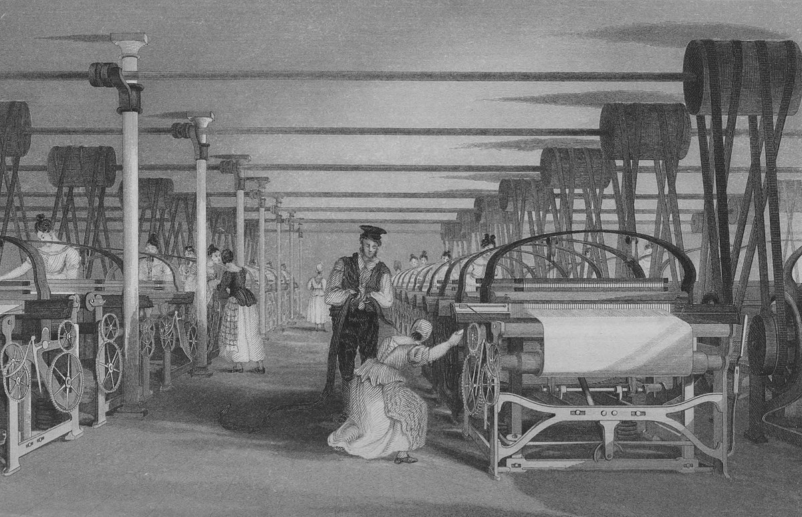

| Box Number | Subject | Id No. | Box Colour | Author | Title | ISBN Number | Our Barcode Number | Status |
|---|---|---|---|---|---|---|---|---|
| Box 01: | Industrial Heritage | 01 | Purple | Bielenberg, Andy | Irish Flour Milling A History 600 - 2000 | 1843510200 | ||
| Box 01: | Industrial Heritage | 02 | Purple | Bielenberg, Andy | Cork's Industrial Revolution 1780 - 1880 Development Or Decline?: Iron, Steam, Fire and Water, Coal, Flour, Whiskey And Porter | |||
| Box 01: | Industrial Heritage | 03 | Purple | Moynihan, Jennifer | An Overview Of The Spinning And Weaving Company And Sunbeam Wolsey | 1911180002 | ||
| Box 01: | Industrial Heritage | 04 | Purple | Larkin, Chris | West Cork Railways Birth, Beauty And Betrayal | 1781177767 | ||
| Box 01: | Industrial Heritage | 05 | Purple | Breen, Colin | An Archaeology Of Southwest Ireland 1570 - 1670 | 1846820405 | ||
| Box 01: | Industrial Heritage | 06 | Purple | Ireland's Own, Carina McNally | The Railways Of West Cork | 9770021095378 | ||
| Box 01: | Industrial Heritage | 07 | Purple | The Birr Scientific And Heritage Foundation | Ireland's Historic Centre Birr |